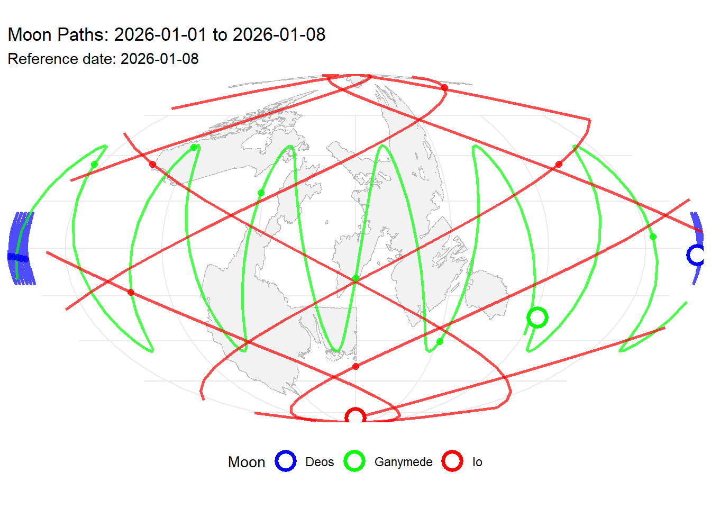
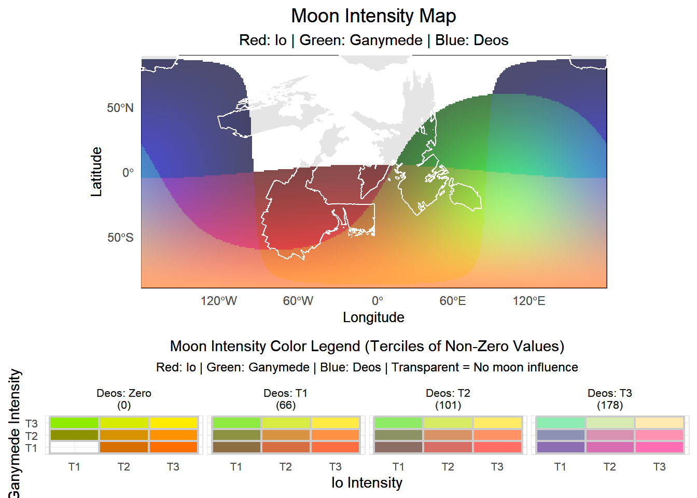
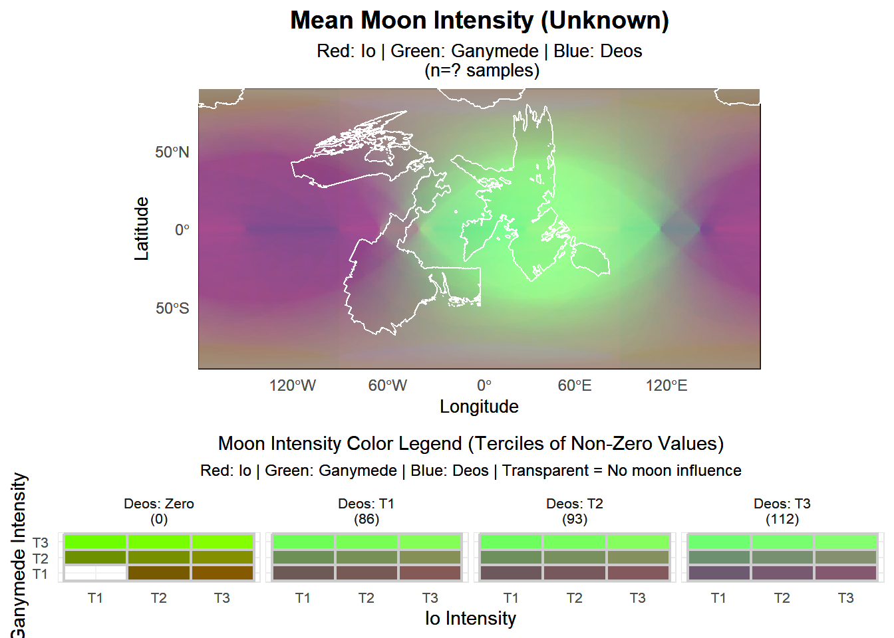

Earth & Moon Orbits
🔴 Io
🟢 Ganymede
🔵 Deos
The planet EARTH has a unique geography driven by the tides of energy emitted by its three moons. Io, Ganymede, and Deos circle the planet in complex orbits, constantly interacting with the planet’s surface and creating a dynamic effect for the inhabitants. Where their light strikes the earth it charges plants, animals, and even the stones with a magical energy that can be harnessed for all sorts of purposes.
Each moon emits a form of energy that careful practitioners can channel to create astonishing effects. These effects wax and wane with proximity of the moons to EARTH’s surface and so the inhabitants have learned to track the moons.
Io orbits with a highly inclined path and moves in retrograde, creating dramatic variations in magical intensity across different latitudes. Its energy is associated with transformation and change.
Ganymede follows a moderately inclined orbit its magic seems to last longer in inanimate objects than the other moons and several plant species seem to have adapted specifically to its pattern of movement–taking advantage of the charge it offers to grow during periods of peak exposure. The moon circles the earth slowly passing over the same point on the surface roughly every seven days. For this reason Ganymede is linked to growth, healing, and natural magic.
Deos has the most stable orbit and moves most slowly resulting in more intersections with the light patterns of the other moons. Its stability makes it ideal for calculating the passage of time and for this reason it is associated with time, memory, and divination magic.

The moons have dramatically different levels of power based on how far they are from a point on the surface at any given time. At any one time half the world is dark to the light of each moon, and at any given time there may be places where no moonlight falls and places where the light of all three moons shines powerfully.

The variability in magical power brought on by the shifting interactions of moonlight is one of the most crucial dynamics for understanding the evolution of EARTH. Different species and individuals within a species seem to have an affinity for different types of moonlight and this affinity can be trained over time, but with rare exceptions, affinity for one type of light limits capacity to interact with another form. In rare cases, individuals with especially powerful affinity for one form of light may actually be weakened by exposure to other forms of light.
At its most primal level highly adapted species will be most active when their adapted form of moonlight is strongest–going dormant or sheltering in holes or dens when they are at their weakest. The natural world has developed an almost infinite number of ways that species have captured advantageous niches by exploiting these power differentials and in some places there can be an extraordinary difference in visible flora and fauna based on the cycle of the moon.
What is true for the plants and animals has also shaped the development pathways of sentient species. In some places power structures have developed with collaborative models reflecting the need for communities to hedge their bets against periods of weakness in one form of moonlight or another. Other societies have found ways to specialize and develop institutions linked to specific types of power, but these societies tend to favor mobility as a way to protect themselves during periods of weakness. In at least one case a group of powerful sorcerers produced a flying castle that moves across the landscape immediately under the blue moon; ensuring that their particular form of magic is always at its maximum potential despite the very slow pathway that the moon travels across the surface.
Lunar mathematics are a major area of study on EARTH as practitioners seek to predict the timing and intensity of moonlight at specific locations. The complexity of the interactions makes this a challenging task, but over time a number of heuristics have emerged that allow for reasonably accurate predictions of moonlight intensity at specific locations. These predictions are crucial for planning agricultural cycles, magical rituals, and even military campaigns.

The power surges of the three moons are at the very heart of this project as it first took shape. I spend a lot of time in my classes thinking about how property rights shape the reality of our world. I have always wondered what the world would be like if it wasn’t so reliant on private property and the original idea for the moons was based on my wondering what it would take to make property rights a losing strategy for human settlement.
My thinking on this is drawn significantly from James Scott’s book Against the Grain [@scott]. In this book Scott argues that hunter gatherer societies were more resilient, had better nutrition, and spent less time laboring than agricultural societies in the early days of human plant cultivation. He argues that agriculture was not a priori superior to hunter-gatherer society, it was demonstrably worse, but that the hierarchy of the agricultural societies and the infrastructure of that hierarchy made them very effective at growth and better adapted to dealing with the needs of larger societies (especially the creation of institutions for managing internal conflict within larger and more complex socieities). Agriculture is not inevitable because it is better, it is inevitable because it expands better, keeps better records of its success, and gobbles up adjacent societies to function as labor in its production system.
A side note I want to explore later is the degree to which Scott’s compelling narrative is consistent with current views in Anthropology. I have some sources (Duncan??) picked up in reading critiques of Harrari that suggest the story is much less simple
Anyway, what would it take for a world to hold off the development of property rights that stem, seemingly inevitably, from agricultural production as a dominant form of human organization? My answer? Highly variable power so that the warlord of one day would be an easy mark the next day.
But what are the downstream effects of this change? If we cannot reliably guarantee the ability to control a particular piece of property, then why would we grow crops there? Someone could come along and simply take them at harvest time. Property has to become more mobile I think. Perhaps societies become more communal? In our world control of land generated wealth that was then available for use in trade. It returned rents that created generational wealth and long term inequalities that underpin almost every social injustice we have. What if land didn’t have this power? Would we have found other ways to create difference? This is one of the primary axes I want to explore in EARTH.